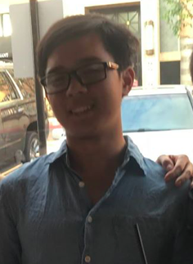
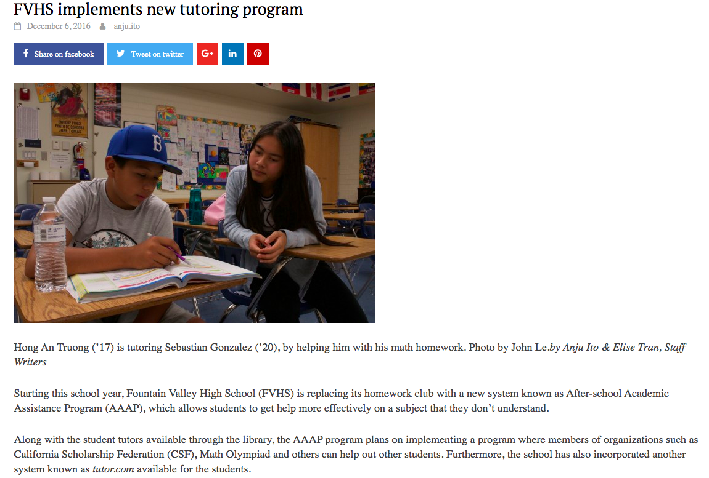
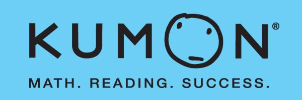
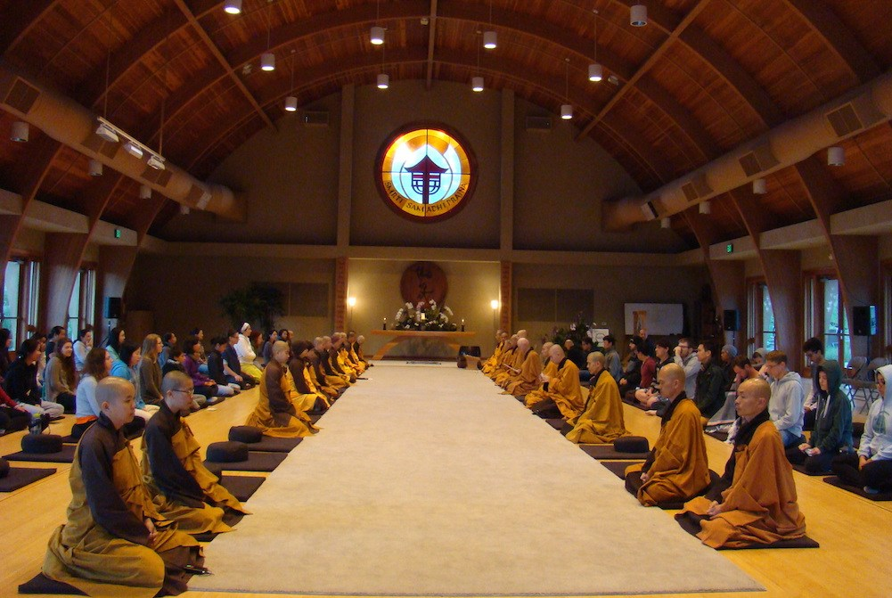
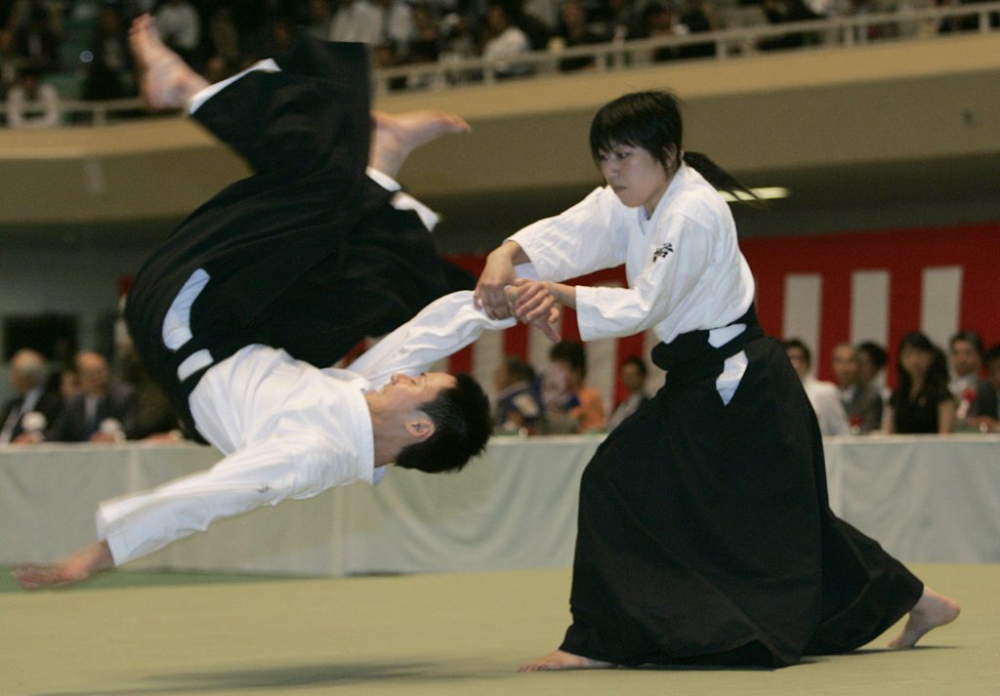
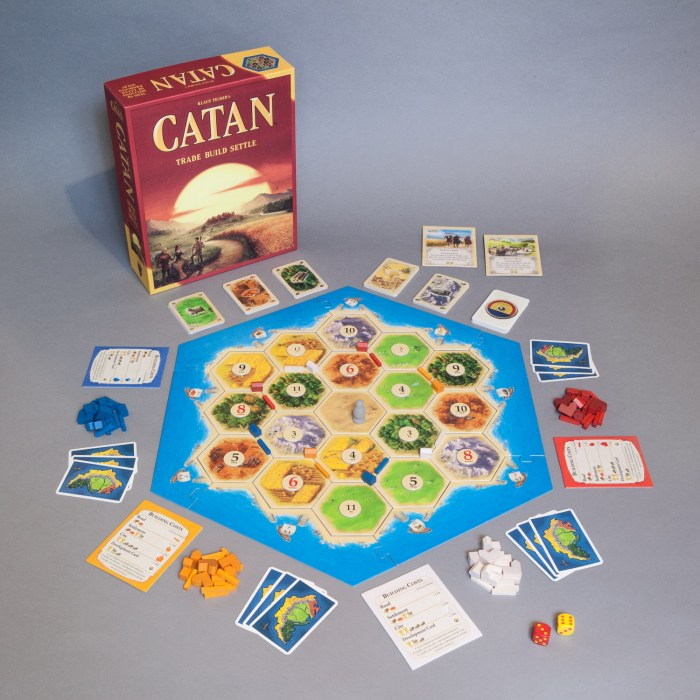

Brandon Nguyen
About Me
Welcome to my page. My name is Brandon Nguyen, and it is a pleasure to have you get to know me better.

I am currently a sophomore at the University of California
San Diego as a Bioinformatics major with a heavy interest in biotech and healthcare. I've also picked up some computer science technicals
in my journey to find where I best employ my soft skills, adeptability, and passion.
This website is a portfolio to compile my experiences, my skills, and just more about me as a person.
I can't wait for you to learn more about me and likewise hope to learn about you as well!
Below are the CS languages I've been learning and applying recently:
- HTML & CSS
- Java
- Python 3
- C++
- JavaScript
- React
To reiterate, it is a pleasure to have you be here. I am excited to share with you more about me and as well, would love the chance to eventually learn more about you!
Experiences
Relevant Works
Undergraduate Researcher
LEDA Fellowship
Virtual Councelor
Front End Fun

Passions
American Sign Language
Sign Language is an underappreciated and valuable asset in many communities. With my
grandfather and
father developing hearing deficiency, it became more urgent for me to dive deeper into American Sign Language.
While
only having a few years of experience, I took it upon myself to teach those unaware of the art while in high
school. As the
president of the American Sign Language Club, I taught introductory and practical ASL and organized deaf socials
to expose the new
club members to. It was an amazing experience being able to contribute to the deaf community as well as expose
those
blessed with proper-functioning senses to a world out of our radar.
There is an article about my experience with introducing American Sign Language to my High School.
You can read the full article here
Piano
My mother was a former piano teacher in Vietnam; it was inevitable that (*stereotype joke*)
I, an asian-born son to a musical mother,
would lay my
hands on the musical instrument mum loved most. I've been taught by my
mother since I was
six and participated in local and state competitions. I
won a few local
tournaments before I stopped partaking in competition and
began to play more casually. Nowadays, I
absolutely enjoy playing songs I
like, mainly video game music and
anime tracks on piano. I have since started
a YouTube channel that I occasionally upload playings of songs I
enjoy.

Here is one of my most recent videos, and perhaps the hardest and most enjoyable piece I've ever played. You can also listen to more on my YouTube Channel here
Tutoring
  Growing up in a buddhist family, my parents taught me that the greatest treasure is to give. In regards to such philosophy, I find it most transparent and true when it comes teaching others. For me, the process of being able to help others understand something new, something they may struggle with, and getting more personal with them is an extremely gratifying experience. With or without pay, I have had an abundance of tutoring experience. Since the age of 15, I have voluntarily tutored at my local Buddhist meditation center, Compassionate Eyes Inc. for Buddhist children every summer. In High School, I was part of the Barons After School Academics, a system of private tutoring where parents reached out to me for tutoring their students in a more professional manner; I have tutored multiple students over long and consistent durations and am capable of drawing my references from said parents. Finally, I have also worked with children of a diverse age range whilst at Kumon, teaching Math and Reading from levels K-12. Each of these experiences have brought me pure joy; just being able to see the smiles on those I've helped makes my day so worthwhile.
Hobbies
 
Some of my most prominent hobbies are practicing and analyzing martial arts, board games (in particular Settlers of Catan), and watching anime / reading manga. I have been engaged in multiple forms of martial arts since the age of 6, including Aikido (11 years), Kendo (2 years), Karate (2 years), and Boxing (2 years). As an avid board game player, I enjoy spending 'board game nights' with friends, playing Monopoly, Monopoly Deal, Settlers of Catan, etc, and am excited to try new ones! I am also a huge anime enthusiast! My childhood was built on anime and manga, and I am an active attender of Anime Conventions. If you share any of these interests, I would love to talk more about them with you!